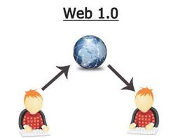

Web 1.0 refers to the first stage of the World Wide Web. It was mainly static, meaning users could only read information without interacting with it. Websites were simple, with limited design and no user-generated content.
Characteristics of Web 1.0: